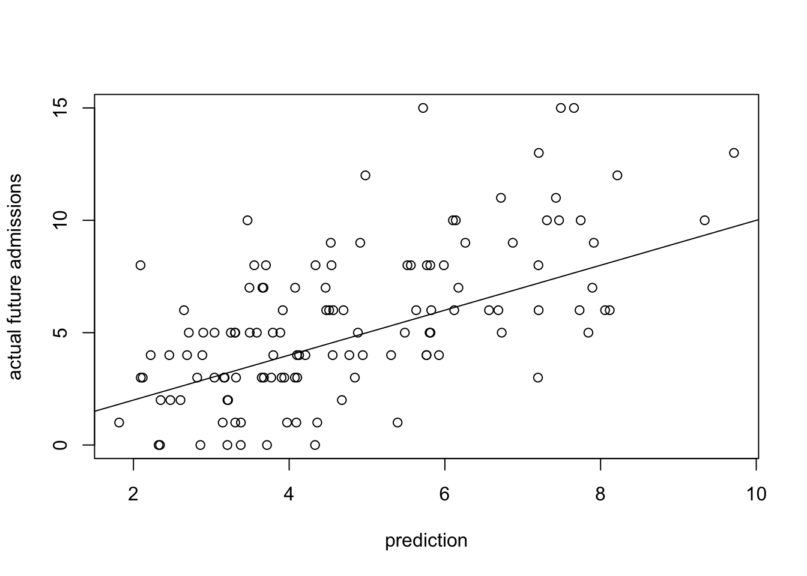

6 Validating the model’s functional form
We can validate the model’s functional form by making predictions and comparing them to the truth. If the estimated mean function is valid, then the observed should be in line with predictions. Of course, there will stil be some error, but the predictions should be accurate on average.
6.1 Posit a model
To posit a model here means to select a model form and distribution, and apply them to a piece of estimation software. Most often the model form is a generalized linear model (which includes linear regression as a special case), but we are also looking at random forest-type models, which are not linear in their inputs.
6.1.1 Model form
Selecting a model form includes deciding which covariates have a predictive relationship with the response, and whether their relationship is linear, linear following some transformation, or should be modeled more flexibly, e.g. with a tree-based approach.
6.1.2 Model distribution
Knowing the allowable range of the response will help you to decide what distribution to specify in fitting a model. Here are some common, crucial decision points:
- If the response is in the form of “number of events out of some number of tries” (e.g. a basketball player’s free throw percentage is the number of made free throws out of tries), then a binomial distribution may be appropriate. This is also the case when the number of “tries” is one - as in our example of five years survival for women with breast cancer. Here, the “event” is “the woman survives five years after diagnosis”, and each person in the study gets one try.
- If the response is a count of independent events, with no “out of” tries, then it may be Poisson distributed.
- If the data are continuous with no bounds then they may be normally distributed.
- If the data are continuous, but have a defined lower bound at zero then they may follow a Gamma distribution.
6.2 Validate the assumptions
Having posited a model, we may check whether the model generates fits and predictions that agree with the assumptions. Let’s do this for our examples.
nfold = 5
folds = sample( 1:nfold, size=nrow(cars), replace=TRUE )
preds = list( 'a' = numeric(nrow(cars)), 'b' = numeric(nrow(cars)), 'c' = numeric(nrow(cars)), 'd' = numeric(nrow(cars)), 'e' = numeric(nrow(cars)), 'f'= numeric(nrow(cars)))
for ( i in 1:nfold ) {
# Estimate a model for the stopping distance data
lm1 = lm( dist ~ speed, data=cars[ folds!= i, ] )
lm2 = lm( dist ~ I(speed^2), data=cars[ folds!= i, ] )
lm3 = lm( dist ~ I(speed^3), data=cars[ folds!= i, ] )
lm4 = lm( dist ~ I(speed^2) + 0, data=cars[ folds!= i, ] )
lm5 = lm( dist ~ I(speed^2) + speed, data=cars[ folds!= i, ] )
lm6 = lm( dist ~ I(speed^2) + speed+0, data=cars[ folds!= i, ] )
preds[['a']][ folds == i ] = predict( lm1, cars[ folds==i, ] )
preds[['b']][ folds == i ] = predict( lm2, cars[ folds==i, ] )
preds[['c']][ folds == i ] = predict( lm3, cars[ folds==i, ] )
preds[['d']][ folds == i ] = predict( lm4, cars[ folds==i, ] )
preds[['e']][ folds == i ] = predict( lm5, cars[ folds==i, ] )
preds[['f']][ folds == i ] = predict( lm6, cars[ folds==i, ] )
}
# calculate the mean squared error of the models
var( preds[['a']] - cars$dist )## [1] 244.5208var( preds[['b']] - cars$dist )## [1] 240.7023var( preds[['c']] - cars$dist )## [1] 257.3291var( preds[['d']] - cars$dist )## [1] 254.792var( preds[['e']] - cars$dist )## [1] 240.7368var( preds[['f']] - cars$dist )## [1] 237.423nfold = 5
fold = sample( 1:nfold, size=nrow(gbsg), replace=TRUE )
pred_gbsg = numeric( nrow(gbsg) )
for ( i in 1:nfold ) {
# Estimate a model for the stopping distance data
glm1 = glm( fys ~ age + meno + size + grade + log(nodes) + sqrt(pgr) + sqrt(er) + hormon, data=gbsg[ fold != i, ], family='binomial' )
# get predictions for the left-out CV fold
pred_gbsg[ fold == i ] = predict( glm1, gbsg[ fold == i, ], type='response' )
}
# calculate the mean squared error of the models
var( (pred_gbsg - gbsg$fys) / sqrt(pred_gbsg * (1-pred_gbsg)), na.rm=TRUE )## [1] 1.1718756.2.0.1 COVID-19 admissions example
Recall that one of our first validation tasks for the COVID-19 admissions data was to check whether the time series was autocorrelated. We concluded that there was not an important amount of autocorrelation, and so we will use modeling methods that treat the data as independent.
Despite that, when the data are a time series, it is good practice for validation splits to respect the time ordering of the observations. After all, you need to be concerned about independence of the predictors as well as the response, and it is simply more realistic to validate the model with a known past and unknown future. That means setting a split date, then training over past data and predicting future observations.
You can still use cross-validation for time-series data - it is called walkforward validation, where each fold is a contiguous temporal block. Here, though, we use a single train/test split: train a model using all data prior to July, 2021 and then use it to predict COVID admissions since then.
set.seed(20211108)
# create a variable for the one-day ahead admissions:
covid$D1_admissions = lead(covid$COVID_NEW_ADM_CNT, 1)
# remove any rows that have NA values
covid = covid[ rowSums( is.na(covid)) == 0, ]
# establish the split date and use it to define a training set:
split = "2021-07-01"
train = covid$date < split
# use CV on the training data to decide which variables to use in the models
screen = gbm( D1_admissions ~ .,
data=covid[ train, -1],
n.trees=3000,
distribution="poisson",
interaction.depth=5,
n.minobsinnode=3,
shrinkage=0.0025,
cv.folds=5 )
# show the most influential variables for predicting COVID admissions:
my_summary = summary(screen,
plotit=FALSE,
n.trees = gbm.perf(screen, plot.it=FALSE) )
print(my_summary)## var rel.inf
## POSITIVITY_RATE_MEAN POSITIVITY_RATE_MEAN 21.15992984
## COVID_MED_SURG_NO_HFNC_CNT_M COVID_MED_SURG_NO_HFNC_CNT_M 14.83983283
## COVID_ACTIVE_DNR_CNT_M COVID_ACTIVE_DNR_CNT_M 6.80277776
## COVID_PT_CNT_MIDNIGHT_MEAN COVID_PT_CNT_MIDNIGHT_MEAN 4.60795378
## DAY_OF_THE_WEEK DAY_OF_THE_WEEK 3.85556257
## COVID_NEW_ADM_MEAN COVID_NEW_ADM_MEAN 3.84604649
## INDX_UCDH_POSITIVITY_RATE INDX_UCDH_POSITIVITY_RATE 3.76074110
## INDX_UCDH_POS_PT_CNT INDX_UCDH_POS_PT_CNT 3.61568817
## COVID_MED_SURG_CNT_M COVID_MED_SURG_CNT_M 3.02052191
## COVID_MALE_CNT_M COVID_MALE_CNT_M 2.98958324
## OUTREACH_POSITIVITY_MEAN OUTREACH_POSITIVITY_MEAN 2.62827320
## OUTREACH_POSITIVITY_RATE OUTREACH_POSITIVITY_RATE 1.93222982
## COVID_DISCHARGE_STD COVID_DISCHARGE_STD 1.75397412
## COVID_ICU_VENT_PCT_M COVID_ICU_VENT_PCT_M 1.53349524
## COVID_ICU_NO_VENT_PCT_M COVID_ICU_NO_VENT_PCT_M 1.40921236
## COVID_PT_CNT_M COVID_PT_CNT_M 1.06311554
## TESTED_PT_CNT_MEAN TESTED_PT_CNT_MEAN 1.02452494
## COVID_PT_CNT_MIDNIGHT_STD COVID_PT_CNT_MIDNIGHT_STD 0.97379651
## COVID_ICU_NO_VENT_CNT_M COVID_ICU_NO_VENT_CNT_M 0.96460797
## COVID_POS_PT_CNT_EVER COVID_POS_PT_CNT_EVER 0.94551837
## COVID_AVG_AGE_M COVID_AVG_AGE_M 0.89209631
## COVID_DISCHARGE_PCT_STD COVID_DISCHARGE_PCT_STD 0.86543726
## OUTREACH_POSITIVITY_SLOPE OUTREACH_POSITIVITY_SLOPE 0.81215037
## COVID_NEW_ADM_CNT COVID_NEW_ADM_CNT 0.80256067
## COVID_MED_SURG_HFNC_CNT_M COVID_MED_SURG_HFNC_CNT_M 0.75407158
## OUTREACH_POSITIVITY_STD OUTREACH_POSITIVITY_STD 0.69702188
## INDX_UCDH_TEST_PT_CNT INDX_UCDH_TEST_PT_CNT 0.64150845
## TESTED_PT_CNT_SLOPE TESTED_PT_CNT_SLOPE 0.63897940
## COVID_ACTIVE_DNR_PCT_M COVID_ACTIVE_DNR_PCT_M 0.60346285
## COVID_PT_CNT_MIDNIGHT_SLOPE COVID_PT_CNT_MIDNIGHT_SLOPE 0.54075889
## COVID_NEW_ADM_STD COVID_NEW_ADM_STD 0.50110912
## OUTREACH_TEST_CNT_MEAN OUTREACH_TEST_CNT_MEAN 0.46501740
## OUTREACH_POS_TEST_CNT OUTREACH_POS_TEST_CNT 0.43046780
## POSITIVITY_RATE_SLOPE POSITIVITY_RATE_SLOPE 0.42406516
## HOSPITAL_CENSUS_M HOSPITAL_CENSUS_M 0.41996645
## COVID_MED_SURG_HFNC_PCT_M COVID_MED_SURG_HFNC_PCT_M 0.39540548
## COVID_ICU_CNT_M COVID_ICU_CNT_M 0.38065354
## COVID_MED_SURG_NO_HFNC_PCT_M COVID_MED_SURG_NO_HFNC_PCT_M 0.38051158
## COVID_DISCHARGE_PCT_SLOPE COVID_DISCHARGE_PCT_SLOPE 0.37000680
## COVID_ICU_VENT_CNT_M COVID_ICU_VENT_CNT_M 0.36308152
## COVID_MALE_PCT_M COVID_MALE_PCT_M 0.35621454
## COVID_DISCHARGE_MEAN COVID_DISCHARGE_MEAN 0.35605100
## OUTREACH_TEST_CNT_SLOPE OUTREACH_TEST_CNT_SLOPE 0.34700125
## COVID_DISCHARGE_PCT_MEAN COVID_DISCHARGE_PCT_MEAN 0.34611494
## INDX_POS_PT_ALL_ADM_PCT INDX_POS_PT_ALL_ADM_PCT 0.32505437
## COVID_DISCHARGE_CNT COVID_DISCHARGE_CNT 0.32031917
## INDX_POS_PT_NEW_ADM_PCT INDX_POS_PT_NEW_ADM_PCT 0.31225111
## TESTED_PT_CNT_STD TESTED_PT_CNT_STD 0.29910087
## POSITIVITY_RATE_STD POSITIVITY_RATE_STD 0.28425817
## INDX_POS_PT_NEW_ADM_CNT INDX_POS_PT_NEW_ADM_CNT 0.27607528
## COVID_DISCHARGE_SLOPE COVID_DISCHARGE_SLOPE 0.26998993
## COVID_DISCHARGE_PCT COVID_DISCHARGE_PCT 0.25148475
## INDX_POS_PT_IN_HOUSE_D6_CNT INDX_POS_PT_IN_HOUSE_D6_CNT 0.24820349
## OUTREACH_TEST_CNT OUTREACH_TEST_CNT 0.24039423
## INDX_POS_PT_ALL_ADM_CNT INDX_POS_PT_ALL_ADM_CNT 0.22543487
## COVID_NEW_ADM_SLOPE COVID_NEW_ADM_SLOPE 0.20798090
## OUTREACH_TEST_CNT_STD OUTREACH_TEST_CNT_STD 0.18292958
## COVID_RULE_OUT_PT_CNT_M COVID_RULE_OUT_PT_CNT_M 0.17851018
## INDX_POS_PT_IN_HOUSE_D7_PCT INDX_POS_PT_IN_HOUSE_D7_PCT 0.16370110
## DISCH_MED_SURG_HFNC_CNT DISCH_MED_SURG_HFNC_CNT 0.15038246
## INDX_POS_PT_IN_HOUSE_D6_PCT INDX_POS_PT_IN_HOUSE_D6_PCT 0.13339931
## DISCH_ICU_VENT_CNT DISCH_ICU_VENT_CNT 0.12530976
## DISCH_MED_SURG_NO_HFNC_CNT DISCH_MED_SURG_NO_HFNC_CNT 0.11078148
## DISCH_ICU_NO_VENT_CNT DISCH_ICU_NO_VENT_CNT 0.10247327
## INDX_POS_PT_IN_HOUSE_D7_CNT INDX_POS_PT_IN_HOUSE_D7_CNT 0.05787682
## COVID_NEW_ADM_FLAG COVID_NEW_ADM_FLAG 0.02298892# use the top twenty variables from the screening model
f = paste0("D1_admissions ~ ", paste( my_summary$var[1:20], collapse=" + "))
# Estimate a model for the covid admissions data
boost = gbm( formula(f),
data=covid[ train, ],
n.trees=3000,
distribution="poisson",
interaction.depth=5,
n.minobsinnode=3,
shrinkage=0.0025,
cv.folds=5 )
# make predictions from the covid admissions model
pred_covid = predict(boost, covid, type='response')[ !train ]## Using 1527 trees...# plot the predicted vs. observed
plot(pred_covid, covid$D1_admissions[!train], xlab="prediction", ylab="actual future admissions")
abline(a=0, b=1)
The predictions are clearly somewhat muted relative to the actual future admissions, but they do capture the trend and when we look at the admissions from the perspective of the assumed Poisson distribution, we will see that the wider errors toward the right of the plot are expected.